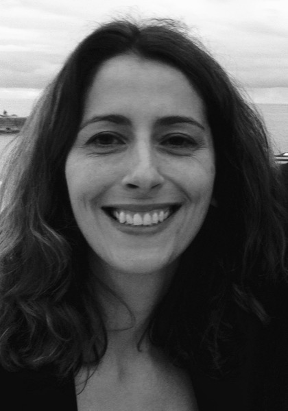

NOVA School of Science and Technology · NOVA University Lisbon
Hi, I'm Carla Ferreira.
I develop formal calculi, techniques, and tools to express and reason about concurrent and distributed systems, ultimately helping programmers build correct software.

I am a Full Professor at the Computer Science Department of the NOVA School of Science and Technology, NOVA University Lisbon and a researcher at the NOVA Laboratory for Computer Science and Informatics (NOVA LINCS), in the Software Systems research stream.
Currently, I lead the TaRDIS project, a Horizon Europe project centered around the correct and efficient development of applications for swarms and decentralized systems. Over the years, my work has been published in top-tier venues such as POPL, EuroSys, OOPSLA, VLDB, ECOOP, ESOP, MoDELS, CONCUR, and ICST.
I started my academic career as an Assistant at Universidade do Minho and received my PhD from the University of Southampton, where I was part of the Dependable Systems & Software Engineering Group (DSSE), first as a PhD student and later as a research fellow. After returning to Portugal and a period as an Assistant Professor at IST, I joined NOVA.
News
- 2026 Two papers accepted at ICST 2026: systematic API testing through model checking, and orchestrating causality in actor-based systems.
- 2026 Serving on the program committees of ESOP 2027 and FM 2026.
- Jul 2025 “Ensuring Convergence and Invariants Without Coordination” presented at ECOOP 2025.
- Jun 2025 Program Committee co-chair of FORTE 2025; proceedings published by Springer.
- Apr 2025 Two papers at PaPoC 2025, on deriving redundancy relations for pure op-based CRDTs and on local-first property graphs.
Selected publications
- A. Gotsman, H. Yang, C. Ferreira, M. Najafzadeh, and M. Shapiro. 'Cause I'm strong enough: reasoning about consistency choices in distributed systems. POPL 2016: Symposium on Principles of Programming Languages. [paper]
- V. Balegas, S. Duarte, C. Ferreira, R. Rodrigues, N. Preguiça, M. Najafzadeh, and M. Shapiro. Putting the Consistency back into Eventual Consistency. EuroSys 2015: European Conference on Computer Systems. [paper]
- M. Butler, C.A.R. Hoare, and C. Ferreira. A trace semantics for long-running transactions. In Communicating Sequential Processes: The First 25 Years, LNCS 3525, 2005. [paper]
- K. De Porre, C. Ferreira, N. Preguiça, and E. Gonzalez Boix. ECROs: Building Global Scale Systems from Sequential Code. OOPSLA 2021: Object-Oriented Programming, Systems, Languages & Applications. [paper]
Work with me
I am always looking for motivated students who want to work on the correctness of concurrent and distributed systems — from the theory of replicated data to verification tools and testing for real platforms. Opportunities for MSc theses, PhD studies, and research positions regularly arise within the TaRDIS project and NOVA LINCS.
If this sounds like you, email me at carla.ferreira at fct.unl.pt with a short note on what interests you, your CV, and your transcript. MSc thesis proposals for the coming year are announced on the Students page.